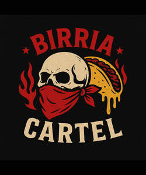

Trade Mark Journal No.2025/032 8 August 2025
UK00004241744 30 July 2025 (1,2,5,7,9,11,16,20,21,28,29,30,31,35,39,40,42,43)

- Class 1
- Food preservatives; Enzymes for food or drinks; Plant food; Gluten for the food industry; Vitamins for the food industry; Glucose for the food industry.
- Class 2
- Food and beverage colorings; Food dyes [food colorants]; Food coloring; Food dyes; Dyes (Food -); Food colouring; Food colorants; Colorants (Food -); Colorants for food.
- Class 5
- Food supplements; Baby food; Food for diabetics; Food for babies; Food for infants; Babies' food.
- Class 7
- Food processors.
- Class 9
- Food timers.
- Class 11
- Food dehydrators; Food warmers; Food dryers.
- Class 16
- Food wrappers.
- Class 20
- Food racks.
- Class 21
- Food mashers; Food basters; Containers for bird food.
- Class 28
- Toy food.
- Class 29
- Meat-based snack food; Fish-based snack food; Vegetable-based snack food; Casseroles [food]; Oils for food; Lard for food; Lard [for food]; Suet for food; Jellies for food; Agar-agar for food; Fruit-based snack food; Snack food (Fruit-based -); Animal fats for food; Tofu-based snack food; Vegetable fats for food; Animal marrow for food; Marrow (Animal -) for food; Animal oils for food.
- Class 30
- Food seasonings; Starch for food; Food flavourings; Glucose for food; Honey [for food]; Turmeric for food; Fructose for food; Flour for food; Rice-based snack food; Snack food (Rice-based -); Mustard for food; Cereal-based snack food; Snack food (Cereal-based -); Syrup for food; Oat-based food; Glutamate for food; Maltose for food; Molasses for food; Wafers [food]; Starch products for food; Flavourings of almond for food or beverages.
- Class 31
- Fish food; Food for fish; Animal food; Pet food; Food (Pet -); Food for animals; Dog food; Food for dogs; Cattle food; Food for goldfish; Food for rodents; Food for cats; Cat food; Hamster food; Food for hamsters; Food for birds; Rabbit food; Bird food; Oat-based food for animals; Stall food for animals; Roots for food; Food products for animals; Edible food for animals for chewing; Food preparations for dogs.
- Class 35
- Retail services in relation to food cooking equipment.
- Class 39
- Transportation of food; Transport of food; Packaging of food; Storage of food; Food delivery; Delivery of food; Packing of food; Delivery of food and drink prepared for consumption.
- Class 40
- Food and drink preservation; Food canning; Food processing; Pasteurizing of food and beverages; Irradiation of food; Food smoking; Food and beverage treatment; Pasteurising of food and beverages; Preservation of food; Food preservation; Food grinding; Food milling; Pasteurization services for food and beverages.
- Class 42
- Food research.
- Class 43
- Food and drink catering; Catering of food and drink; Catering (Food and drink -); Catering of food and drinks; Preparation of food and drink; Preparation of food and beverages; Fast food restaurants; Provision of food and drink in restaurants; Take-away food and drink services; Food preparation; Providing food and drink; Providing of food and drink; Takeaway food and drink services; Serving food and drinks; Providing food and beverages; Provision of food and beverages; Provision of food and drink; Hospitality services [food and drink]; Take-away food services; Decorating of food; Providing food and drink in bistros; Food and drink catering for institutions; Food and drink preparation services; Services for the preparation of food and drink; Takeaway food services; Food and drink catering for banquets; Catering for the provision of food and drink; Providing food and drink for guests in restaurants; Take-away fast food services; Serving food and drink for guests in restaurants; Catering for the provision of food and beverages; Providing food and drink in doughnut shops.
Charles Toland